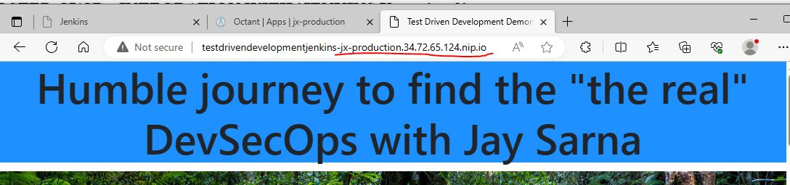

Table of Contents
1. PURPOSE
2. WHAT DOES IT INTEGRATE WITH - ON PREM CI WITH JENKINS
3. WHY IS IT IMPORTANT
4. HOW DOES IT INTEGRATE
5. CLOUD HOSTED CI/CD - INTEGRATION WITH JENKINS X
5.1How to Setup Jenkins X for CI/CD
5.2 Some Benefits of using Cloud hosted CI/CD
5.2.1 High Reliability
5.2.2 Benefits of containers
5.2.3 Multiple environments can be created on demand
5.2.3.1 PRE-REQ- Environment creation during application setup in Jenkins X
5.2.3.2 Scrum/Kanban Agile Iteration package scenario
5.2.3.3 Release branch created with fixes and a Pull Request (PR) to merge with main branch
5.2.3.4 Creation of pull request leads to Continous Integration (CI)
5.2.3.5 Deployment to Quality Assurance(QA)/Staging Environment on approval
5.2.3.6 Promotion to the Production environment
5.2.4 DevOps Test Automation:
5.2.5 More Coming
Back to Top
1. PURPOSE
To demonstrate that it is possible to trigger and run automated regression tests automatically and remotely, every time a change is committed to a code repository. This is done for Cloud Hosted Continous Integration / Continous deployment (CI/CD) a.k.a Devops system and on premises CI/CD via Jenkins X and Jenkins, respectfully.
It is worth noting that Jenkins is an open source tool and completely free . The Jenkins X demostration here was done in Google cloud using free 'new starter' credit and with guidance from Trainings and tutorials on the web.
Back to Table Of Contents
2. WHAT DOES IT INTEGRATE WITH - ON PREM CI WITH JENKINS
This application integrates with JENKINS, a continuous integration and continuous delivery open source tool.
Back to Table Of Contents
3. WHY IS IT IMPORTANT
To understand the importance of what has been achieved, it will be helpful to understand the promise continous integration holds in terms of finding early defects for software testers.
BACKGROUND FROM SOFTWARE TESTING PERSPECTIVE
WITHOUT CONTINUOUS INTEGRATION
In the past, several developers working on the same project using a configuration management tool like SVN,GIT etc. could checkin their changes to the code repository and run the build. This would continue till the application was built and ready to test, only then the functional and integration defect finding tasks could begin. Unfortunately in testing processes, the gnarly and critical task of regression defect finding due to coupled code tends to be the last of the tests planned to be run. Depending on the "software development lifecycle" followed, testing would only start days/weeks/months, essentially after the commencement of the project.
WITH CONTINUOUS INTEGRATION
It is a testing principle that the sooner the defects are found in software development, the cheaper they are to fix (Refer ISTQB principles). Continuous integration's benefit is that it allows us to find defects early. So, in a development team implementing continuous integration with say Jenkins, the automated regression tests could be added to the build process such that they are run every time the build is run by Jenkins. Jenkins can be configured to trigger a build after each change is committed/pushed to the code branch or scheduled nightly. This means that critical regression defects are found instantaneously as the code is being developed, rather than being found days/weeks/months later after the code is deployed to the test environment.
WHAT IT MEANS TO THE WEB CALENDAR APPLICATION
This application is configured to auto-run Selenium tests using the TestNG framework right after the application build is triggered in Jenkins. It is important to note that the build is displayed to Jenkins viewers as a PASS only when the build passes and these tests pass. So critical defects are found instantly. See below for how it works:
Back to Table Of Contents
4. HOW DOES IT INTEGRATE
Three step process was followed to achieve the integration:
OBJECTIVEPlease see "WHAT IT MEANS TO THE WEB CALENDAR APPLICATION" in the "Why is it important" section above. |
PRE-REQUISITE1. Selenium RC and TestNG running on Eclipse IDE (software development tool) 2. Openshift account setup with RHC and GIT configuration management tools setup. 3. Jenkins setup on localhost via placing the downloadable jenkins.war file into the webapps folder of Apache TOMCAT installation. 4. Jenkins has "GIT" plugin installed |
STEP 1Setup the Git repository for the web calendar application so that its build can be run from Jenkins. What success meant: Builds for the Openshift web calendar application can be run remotely from Jenkins. The image below displays the Jenkins job for web calendar application. |
STEP 2Setup a Selenium automation regression test suite using TestNG framework for testing the application. What success meant: A selenium test suite exists for the application that can be run from command prompt. The image below displays the Test NGSelenium test suite. 
The image below displays the test suite can be run from command prompt. 
|
STEP 3Setup Jenkins to run the automation test suite every time a build is triggered What success meant: Jenkins will run the automation scripts right after every application build. The windows command prompt instructions to Jenkins to run the automation tests. |
STEP 4Test the running of the build in scenarios where automation tests pass and automation tests fail. What success meant: the web calendar application's build passes when automation tests pass, and more importantly, it fails when automation tests fail even if the actual code build passed. The image below displays how web calendar application build passes when the automation tests pass. The image below displays how web calendar application build fails when the automation tests fail, even if the build of the code branch succeeded. |
Back to Table Of Contents
5. CLOUD HOSTED CI/CD - INTEGRATION WITH 'JENKINS X version 3'
This application is now hosted on Git hub and it integrates with 'JENKINS X', a continuous integration and continuous delivery open source tool for the cloud, which uses Docker containers and Kubernetes to manage CI/CD. Jenkins X is an opinionated CI/CD engine, i.e. it has been designed and built to address Devops and developer needs, e.g. when a commit is made to a git repository, Jenkins X is listening and it will trigger pipelines with specific knowledge of what files to add/change etc based on your build pack/application type (e.g. maven, nodejs, javascript etc.).
5.1 To use Jenkins X CI/CD, following steps roughly need to be followed:
5.1.1 Setup Jenkins Cluster: In a cloud environment (I used google cloud but instructions for Azure, Amazon etc. available too), use the packages provided by Jenkins X to setup a Kubernetes cluster to host Jenkins X.
5.1.2 Setup application repository in Cluster: 5.1.2 Use JX cli to import your project from a Source Control Manager e.g. Github, to Jenkins X Cluster.
5.2 Some Benefits of using Cloud hosted CI/CD
5.2.1 High Reliability: Kubernetes offers high assurance as if one pod 'goes down'/hangs from e.g. a DDOS attack, a new pod is spawned near instantaneously and application returns.
5.2.2 Benefits of containers: Kubernetes uses containers and they come with their benefits e.g. immutable, light weight, easily reusable due to yaml definition etc.
5.2.3 Multiple environments can be created on demand - [default] Preview, Staging and Production:
Continous Deployment (CD) requires the Devops flow. This is best demostrated with an example:
5.2.3.1 PRE-REQ- Environment creation during application setup in Jenkins X: When this WebCalendar application was imported in Jenkins X platform, the build logs showed two environments were created - Staging and Production. These were initiated by Jenkins X creating two pull requests on the repository (#6 and #7 for Staging and Production in this case, respectfully).
These pull requests above corroborate with two pipelines running on Jenkins X UI (Octant) at the same time, from what I see deploying the app on separate containers for 'Staging' and 'Prod' in the pod created for the application in Jenkins X Kubernetes cluster:
5.2.3.2 Scrum/Kanban Agile Iteration package scenario: A fortnightly release is planned with bug/issue fixes, like two below:
Issue 2: Webpages have hardcoded urls
Issue 3: Make the Jenkins repo for testdrivendevelopment the Production Repo
5.2.3.3 Release branch created with fixes and a Pull Request (PR) to merge with main branch:
Software Engineer creates a feature/release branch from main branch and makes fixes in it for release. Tests locally on his machine, then when ready creates a pull request to merge with repo's Main branch, in preparation for deployment to Production.
Note: The pull request description lists the two issues above prefixed with "Resolves" keyword. What this means is that, in addition to they getting linked to the PR, if this Pull Request is successful (changes make it to main branch), then these issues will be auto closed.
5.2.3.4 Creation of pull request leads to Continous Integration (CI) - Jenkins X auto builds code, runs CI automated tests and auto deploys to a preview environment (see figure below) if all preceding steps pass. The pipeline logs in JX UI (octant) can show any details of test failures.
5.2.3.5 Deployment to Quality Assurance(QA)/Staging Environment on approval - if the Authorised peer reviewer is happy with manual inspection in preview environment, a comment '/approve' can be placed in the PR from a person holding role of owner in the github repository. This will promote the preview environment to the Staging Environment.
RESULT: Following is a successful deployment of the application in staging environment (namespace: jx-staging):
Note: Following this step (successful merge to Production) the feature branch auto destroy's itself. This step also starts the process of Production deployment by auto creating a Github pull request for the Kubernetes Jenkins X cluster Repository (see step a)).
5.2.3.6 Promotion to the Production environment: Once test people get sign-off on release from QA/Staging environment, Production deployment is next. This is a bigger deal than affecting just a application repo and thus requires approval on the Cluster Repository. Approval provided in Github via a comment on PR by an owner of the cluster repo:
RESULT: Following is a successful deployment of the application in Production environment (namespace: jx-Production):
Note: It is possible to setup custom DNS for achieving desired url names. I have not configured that in this production url yet.

5.2.4 DevOps Test Automation: Standard benefit of Continous Integration that you can have inbuilt quality as tests can be automated to run after the build.
Note: At the moment, it only show two tests, however, BDD/cucumber tests can also be wired here. BDD/Cucumber tests are explained in Test Automation link below.
5.2.5 More Coming
Back to Table Of Contents